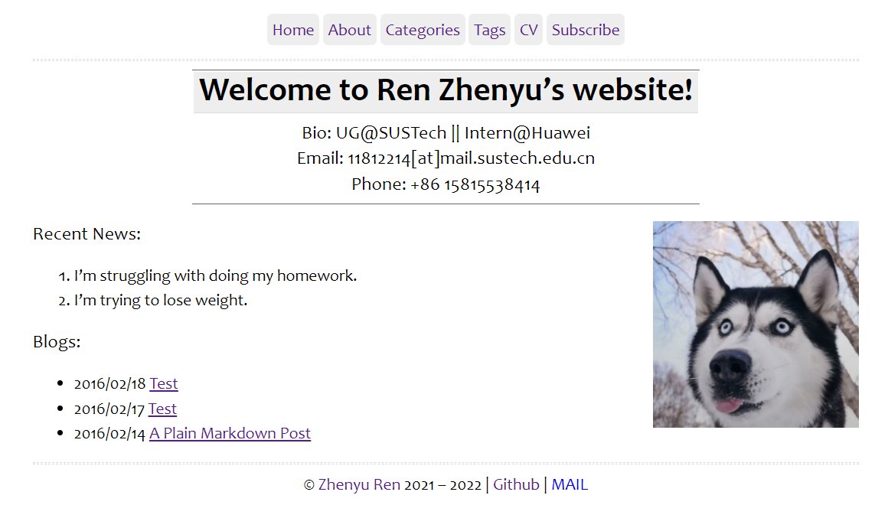

Brief Bio
- I’m an undergradute student in the Department of Electrical and Electronics Engineering at Southern University of Science and Technology (SUSTech). I am currently studying in LAb of WirelesS communications and System Optimization (LASSO) and being supervised by Prof. Wang Rui.
- I’m also currently working as an internship student in the Integrated Sensing And Communication (ISAC) group in Wireless Technology (WT) LAB of Huawei Technology. My supervisor at the company is Dr. Tony Han Xiao.
- My research interest focuses on:
- Wireless Communication.
- Integrated Sensing And Communication (ISAC).
PDF version for my CV: [CV.pdf] (Last Updated: April.2021).
Academia
-
Southern University of Science and Technology | Bachelor September. 2018 - present
Majoring in Communication Engineering, supervised by Prof. Wang Rui
GPA: (3.69/4.00), ranked 5/26.
-
Huawei Technology, Wireless Technology Laboratory | Research Intern June. 2021 - present
Supervised by Dr. Tony Han Xiao
Publications
- I still have no publications.
Projects & Software
Note: You can look up my Github for my full project lists.
1. Integrated Sensing and Communication:
| Project Name | Description |
|---|---|
 Indoor and Outdoor Channel Simulations using Winprop API (Mostly finished) |
This project uses a Ray-Tracing Software (winprop) and its API (C++) to do Channel simulations. |
| UG Graduate Thesis. (Wi-Fi Based Indoor Near Field Imaging.) | In progress… |
2. Personal Interest:
| Project Name | Description |
|---|---|
 My Homepage (Continuously updated.) |
A simple academic page, maintained by Hugo. |
| Undetermined… | In Progress… |
Awards
- 南方科技大学优秀学生三等奖学金（2次）
- 2020年全国大学生数学建模大赛省级一等奖